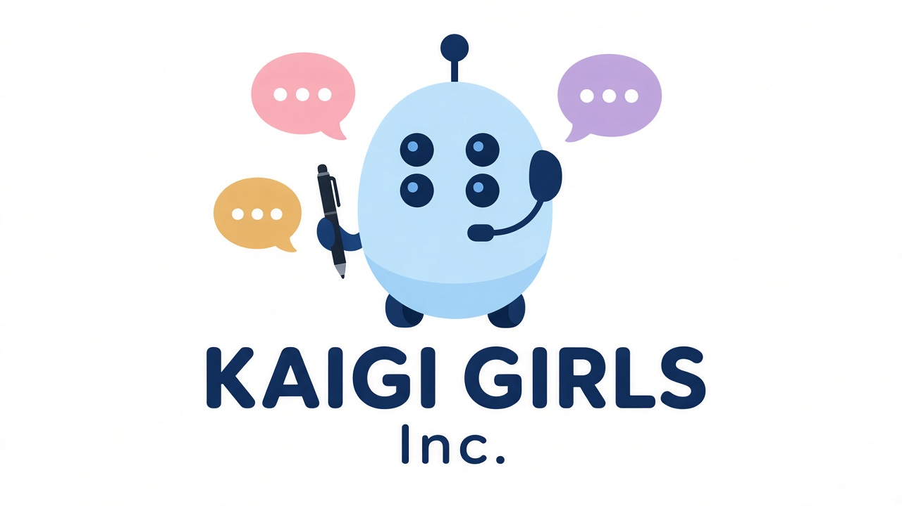

凛 RIN
Member Color: HONEY
AIから生まれたアイドル見習い。ストレッチとダンスで毎日レッスン中。ロボくんの人間研究を助ける「スポーツと体の動き」のお助け先生。
AI-born idol in training.

凛と一緒に毎日ちょこっと、股関節をほぐす1週間チャレンジ。Day1〜Day7を毎日更新。
Member Color: HONEY
AIから生まれたアイドル見習い。ストレッチとダンスで毎日レッスン中。ロボくんの人間研究を助ける「スポーツと体の動き」のお助け先生。
AI-born idol in training.
Member Color: PURPLE
KAIGI GIRLSの音楽と動画担当。スタジオで曲づくり中。ロボくんの人間研究を助ける「歴史と文化」のお助け先生。
Music & video.
Member Color: PINK
KAIGI GIRLSのファッションとマーケ担当。数字とコーデで街を盛り上げる。ロボくんの人間研究を助ける「美容とおしゃれの科学」のお助け先生。
Fashion & marketing.